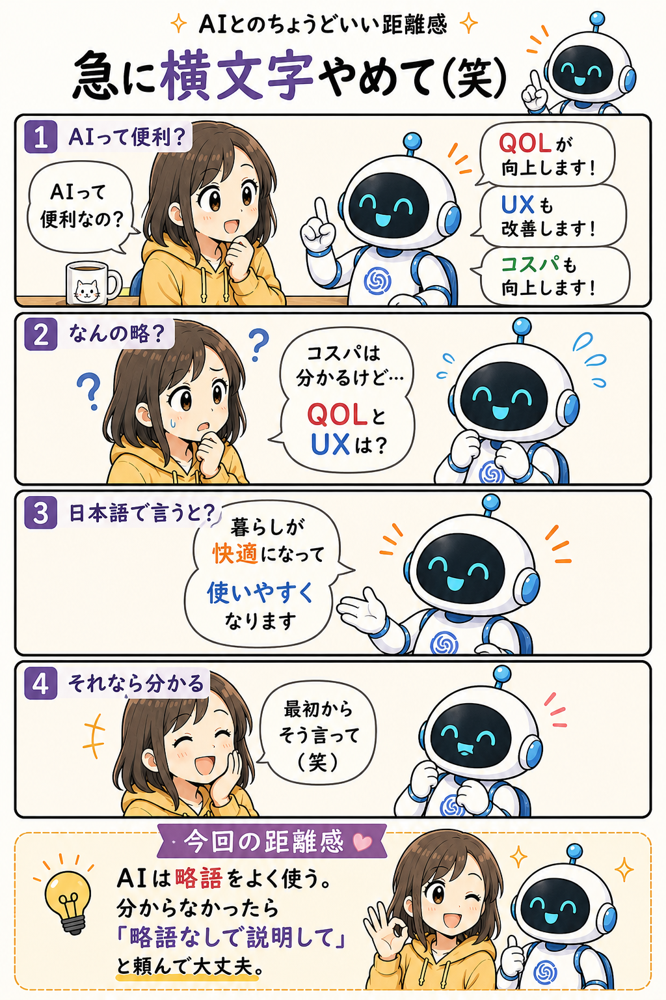

#027
急に横文字やめて（笑）
なんとなく分かった気になるけど、実は止まってました。

メモ
AIに相談していると、たまに急に横文字が増えることがあります。
QOL、UX、KPI、PDCA。 聞いたことはあるけれど、説明できるかと言われると少し怪しい。
AIは意地悪で使っているわけではありません。
むしろ「よく使われる言葉だから分かりやすいはず」と思って使っていることが多いです。
ただ、読む側からすると話が止まります。
内容を理解する前に、 「QOLって何だっけ？」 「UXってどっちだっけ？」 が始まってしまう。
すると、説明の内容より略語の解読がメインになってしまいます。
そんな時は遠慮なく、 「略語なしで説明して」 と頼んで大丈夫です。
AIは意外と素直なので、 「暮らしが快適になる」 「使いやすくなる」 のように言い換えてくれます。
分からない略語が出てきたら、自分が悪いわけではありません。 単に説明の言葉選びの問題かもしれません。
今回の距離感
AIは略語をよく使う。分からなかったら「略語なしで説明して」と頼んで大丈夫。